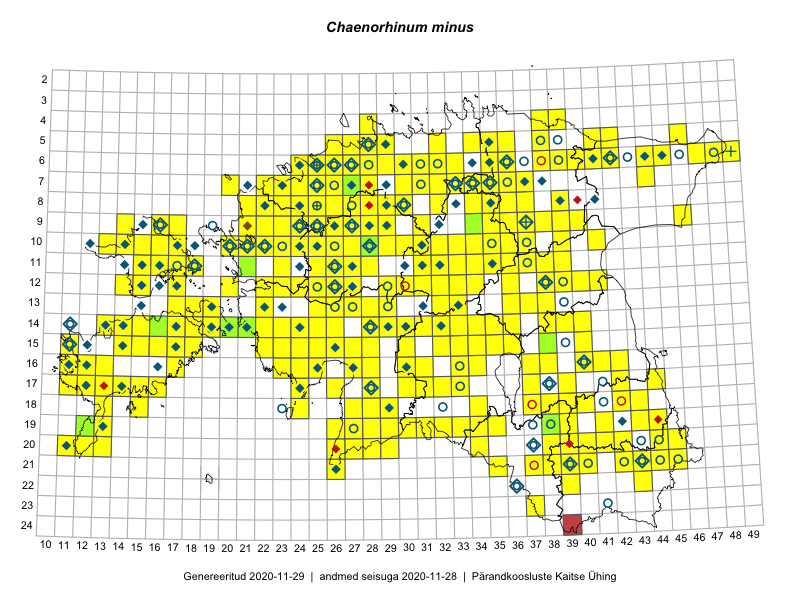

Chaenorhinum minus
Uuendatud: 2016-12-02
Kaardile koondatud taksonid: Chaenorhinum minus (L.) Lange

Kaart põhineb 283 kirjel, neist vaatlusi 282 ja eksemplare 1. Taksonit on leitud 226 ruudust.
Kuvatud viited 20 esimesele andmebaasikirjele, ülejäänud PlutoFis
- Thea Kull: 2015-07-07: 16-40: ala
- Toomas Kukk, Eerik Leibak: 2015-08-09: 14-15: ala
- Toomas Kukk, Eerik Leibak: 2015-08-12: 09-17: ala
- Toomas Kukk, Eerik Leibak: 2015-08-10: 09-14: ala
- Ott Luuk, Peedu Saar: 2015-07-27: 11-35: ala
- Peedu Saar: 2015-07-14: 15-38: ala
- Ott Luuk, Toomas Kukk, Thea Kull, Peedu Saar, Timo Luhamäe: 2015-06-25: 10-28: ala
- Peedu Saar, Eerik Leibak: 2015-07-30: 16-41: ala
- Ott Luuk: 2015-06-28: 13-26: ala
- Peedu Saar, Liina Oja: 2015-07-21: 06-44: ala
- Ott Luuk, Toivo Sepp: 2015-07-12: 10-31: ala
- Toomas Kukk, Tiit Hallikma: 2015-07-24: 06-41: ala
- Peedu Saar: 2015-08-04: 14-36: ala
- Tiit Hallikma, Toomas Kukk: 2015-06-11: 10-29: ala
- Peedu Saar, Eerik Leibak: 2015-08-16: 12-39: ala
- Peedu Saar, Eerik Leibak: 2015-08-18: 11-39: ala
- Rein Kalamees, Kersti Püssa: 2015-08-15: 05-36: ala
- Tiit Hallikma, Toomas Kukk: 2015-07-20: 07-44: ala
- Rein Kalamees, Kersti Püssa: 2015-08-16: 05-35: ala
- Ott Luuk: 2015-06-25: 10-28: GPS punkt